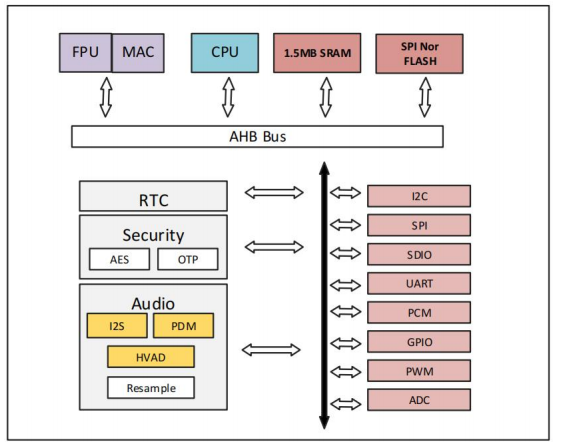
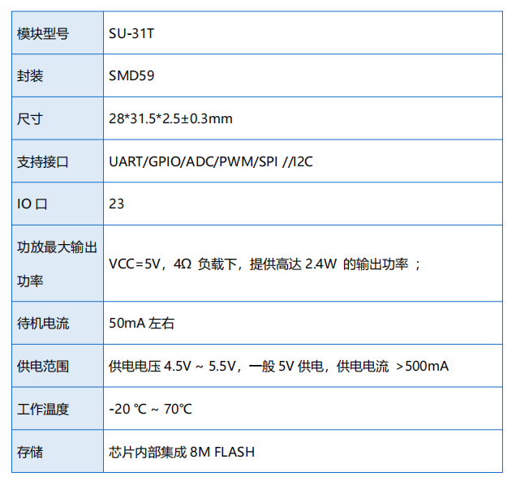

SU-30T/31T
淘宝链接：https://shop379208868.taobao.com
简介
概述
SU-30T/31T 离线双麦语音核心模块是机芯智能针对大量纯离线控制场景和产品最新推 出的一套双麦人机自然语音交互系统，模块主芯片采用 DSP+NPU+CPU 异步架构，前 端信号处理 DSP，性能是 HiFi4 的两倍提供更好的降噪，增强，BF 等功能，高效神经 网络处理器提供更快速和准确语音识别。支持 150 条本地指令离线识别，支持 RTOS 轻量级系统，并具有丰富的外围接口。包括 UART、I2C、SPI、PWM、ADC 等。 可 广泛且快速的应用于智能家居、各类智能小家电、86 盒、玩具、灯具、工业、医疗、物 联网、汽车、安防与照明等需要语音操控的产品。例如风扇、智能门锁、扫地机、智能 台灯、智能空调、智能茶壶、故事机、智能窗帘、智能风扇、车载音控等产品。

特性
ARM CPU @270M
双 128bit 的数据读写带宽
8MACs/周期单精度浮点运算能力
16MACs/周期半精度浮点运算能力
32MACs/周期语音 NN 运算能力
支持 8/4/2/1 低精度权重
加入特殊指令集加速神经网络算法激活函数（例如：tanh,ReLU,Sigmoid…）
芯片内部集成 1.5MB 高速 SRAM
芯片内部集成 8M FLASH
芯片内置高精度时钟电路
支持定时唤醒，关机功能
最多支持 4 路 UART 接口（其中 1 路 4 线）
支持 IR 输入/输出
1 路 10bit SAR ADC 接口
最高 7 路 PWM 接口
支持 1 路 I2C
最高支持 23 个 GPIO 输入输出控制接口
1 路 SPI 接口
59 Pin 邮票孔封装
主要参数
